Visualización de datos en R
Métodos y Simulación Estadística
La visualización de datos es una de las partes más importantes del análisis de datos, que permite de manera gráfica representar la información con el fin de poder resumirlos e interpretarlos
Algunas consideraciones
| Tipo de variable | Tipos de escala | Tipo de gráfico | Sintaxis R |
|---|---|---|---|
| Cualitativa | Nominal | diagrama de torta | pie(table(x)) |
| Ordinal | diagrama de barras | barplot(table(x)) |
|
| diag.barras dobles | barplot(table(x,y)) |
||
| diag. mosaico | plot(x,y) |
||
| Cuantitativa | De intervalo | diagrama de tallos y hojas | stem(x) |
| histograma | hist(x) |
||
| De razón | diagrama de puntos | plot(x,y) |
|
| diagrama de densidad | density(x) |
||
| diagrama de cajas | boxplot(x) |
||
| diagrama de linea | plot(x, type="l") |
||
Nota: Además de estas formas de representación gráfica existen otras formas que combinan variables como:
- Mapas
- Diagrama de Mosaico
- Diagramas de radar
- Diagrama likert
Variable cualitativa-nominal
Gráfico de tortas
data=CarreraLuz22
t1=table(data$categoria)
pie(t1)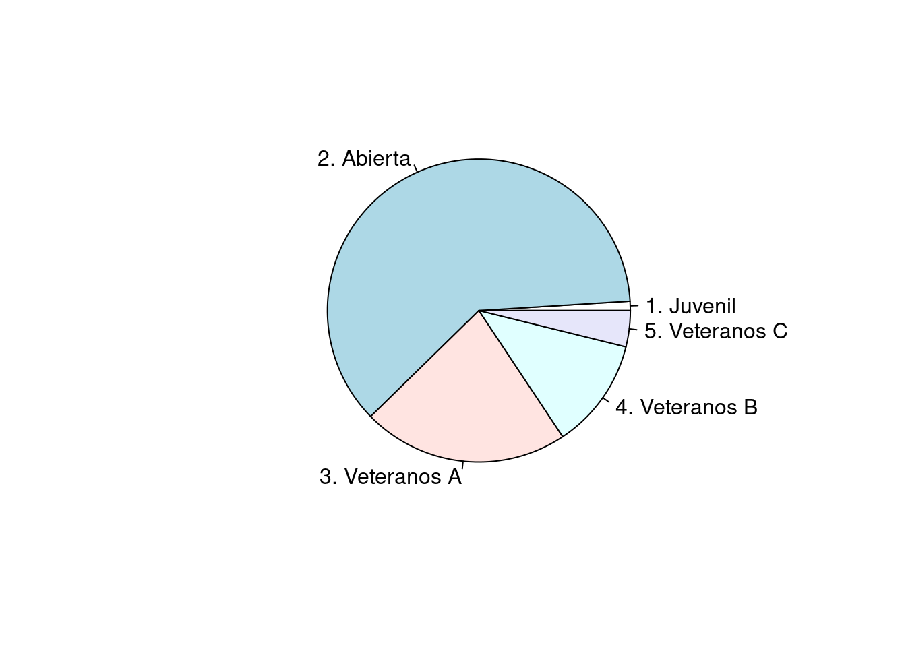
Variable cualitativa-ordinal
Gráfico de barras
ev=c(5,13,30,52,35)
ev=as.table(ev)
names(ev)=c("MR","R","B","MB","E")
barplot(ev, col=c("#f95738","#ee964b", "#f4d35e", "#faf0ca", "#0d3b66"),
main = "Evaluación proceso de inducción",
las=1 )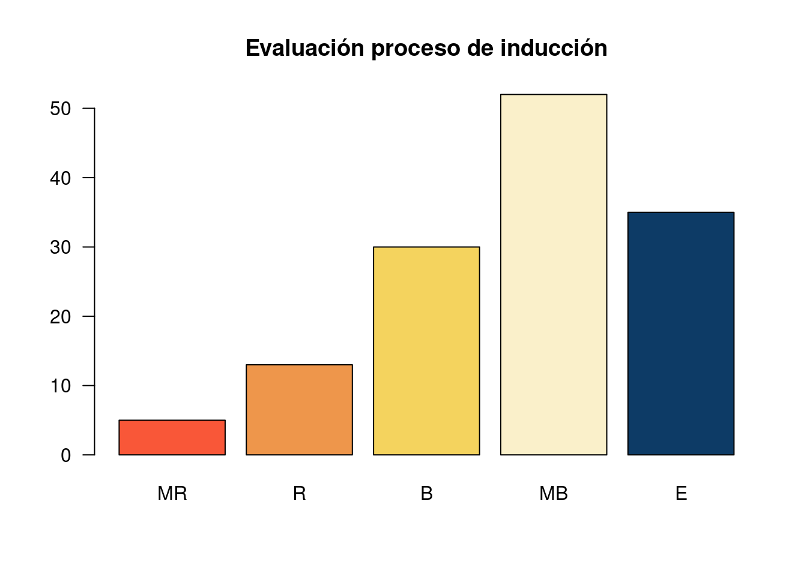
Gráfico de barras 2
conteo <- table(data$sex,data$categoria)
barplot(conteo, main="Número de atletas por categoria y sexo",
xlab="Categorías",
col=c("#0d3b66","#f4d35e"),
legend = rownames(conteo),
las=1, ylim = c(0,1200),
names.arg=c("Juvenil","Abierta","Veteranos A","Veteranos B","Veteranos C"))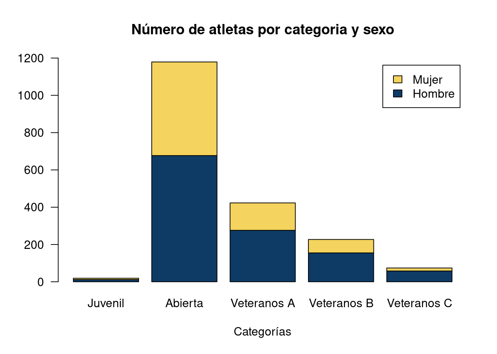
Variables cuantitativas
Diagrama de tallos y hojas
Diagrama de tallos y hojas para el tiempo empleado por las atletas de la categoria Veteranas B
# seleccion de bases
dataFc4=subset(CarreraLuz22, (CarreraLuz22$sex=="Mujer" & CarreraLuz22$categoria=="4. Veteranos B")) # dataset de mujeres
x=dataFc4$timerun/60
stem(x) # Diagrama de tallos y hojas
The decimal point is 1 digit(s) to the right of the |
4 | 68
5 | 2234
5 | 6888899
6 | 01233334
6 | 5555566666778899
7 | 00111334
7 | 5667788
8 | 0001112333334
8 | 57899
9 | 04Histograma
# seleccion de bases
dataFc4=subset(CarreraLuz22, (CarreraLuz22$sex=="Mujer" & CarreraLuz22$categoria=="4. Veteranos B")) # dataset de mujeres
x=dataFc4$timerun/60
hist(x, xlim=c(40,100), las=1,
main = "Distribución de los tiempos mujeres Veteranas B",
xlab="tiempo (min)",
ylab = "frecuencia",
col ="#ee964b")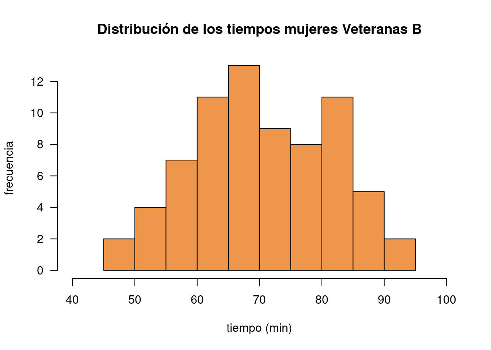
Diagrama de densidad
par(mar = c(5, 4, 4, 1)+0.5) # margenes de la gráfica
plot(density(x), lwd=3, col="#0d3b66",
main = "Distribución del tiempo - mujeres categoría Veteranas B",
xlab="tiempo (min)",
ylab = "densidad", las=1,
cex.lab=1, # tamaño de etiqueta ejes
cex.axis=.8, # tamaño escalas de los ejes
cex.main=1, # tamaño del titulo
cex.sub=1) # tamaño del subtitulo)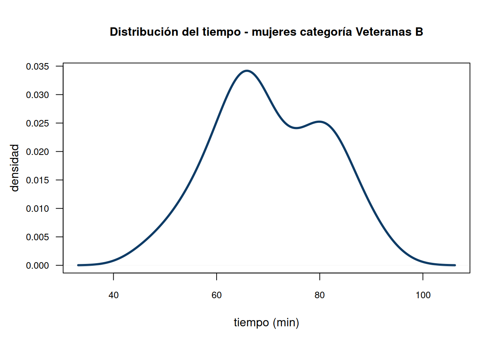
Diagrama de cajas
boxplot(CarreraLuz22$timerun/60~CarreraLuz22$sex,
main = "Distribución del tiempo carrera La Luz 2022",
ylab="tiempo (min)",
xlab = "sexo", las=1,
col=c("#f4d35e","#ee964b"))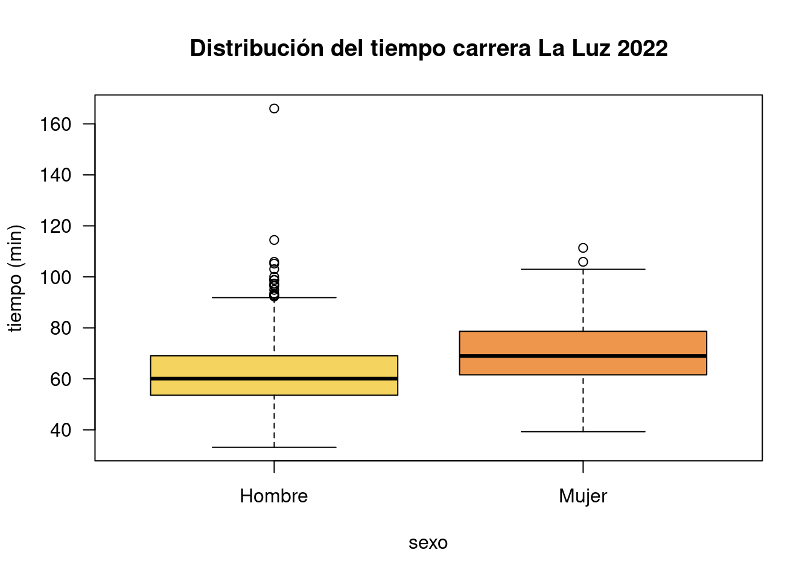
Gráfico de series de tiempo
y=ts(inflacion2022$inflacion, star=c(1993,1), end=c(2022,12), frequency=12)
plot(y, type="l",
main="Inflación Colombia ene-1993 a dic-2022",
ylab="inflación acumulada anual (%)",
xlab = "meses", las=1,
col="#ee964b",
lwd = 4)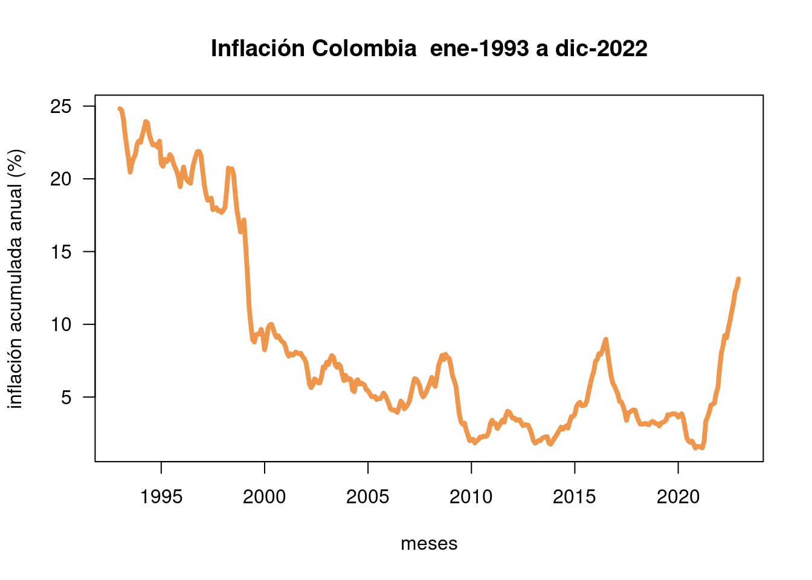
Resumen
x=rnorm(100,100,20)
y=rnorm(100,100,25)
z=rbinom(100,4,0.30)
t=1:100
pie(table(z)) # diagrama de torta
barplot(table(z)) # diagrama de barras
stem(x) # diagrama de tallos y hojas
hist(x) # histograma
boxplot(x) # diagrama de cajas
plot(x,y) # diagrama de dispersión
plot(t,y, type="l") # diagrama de lineas
plot(density(x)) # diagrama de densidadggplot2

Gráficos con ggplot2

Data: capa de los datos
Aesthetics: capa estética (aes), definimos las variables a utilizar en el gráfico
Geometries: capa de geometrías, se define el tipo de gráfica a realizar
Facets: capa de facetas, permite detallar la gráfica por categorías
Statistics: capa de estadística, permite agregar modelos
Coordinates: capa de coordenadas, permite ajustar las escalas de los ejes
Theme: capas de características del gráfico que no dependen de los datos
Visualizacion de datos con ggplot2
library(readr)
library(ggplot2)
ggplot(CarreraLuz22, aes(y=edad , x=timerun/60)) # lienso con escalas 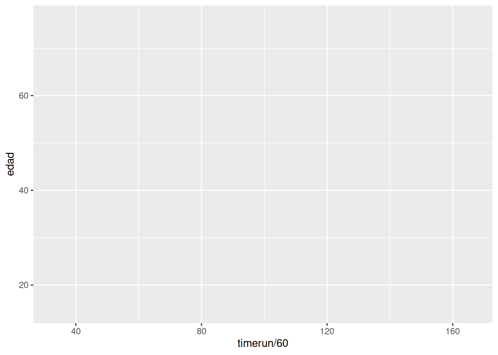
ggplot(CarreraLuz22, aes(y=edad , x=timerun/60))+
geom_point() # grafico de puntos| geo_point() | geom_bar() | geom_col() | stat_count() |
| geom_boxplot() | stat_boxplot() | geom_density() | stat_density() |
| geom_histogram() | geom_violin() |
ggplot(CarreraLuz22, aes(y=edad , x=timerun/60))+
geom_point()+
facet_wrap(~ sex) # separacion por sexoggplot(CarreraLuz22, aes(y=edad , x=timerun/60))+
facet_wrap(~ categoria)+
stat_smooth(method = "loess" , formula =y ~ x) # ajuste de modelo 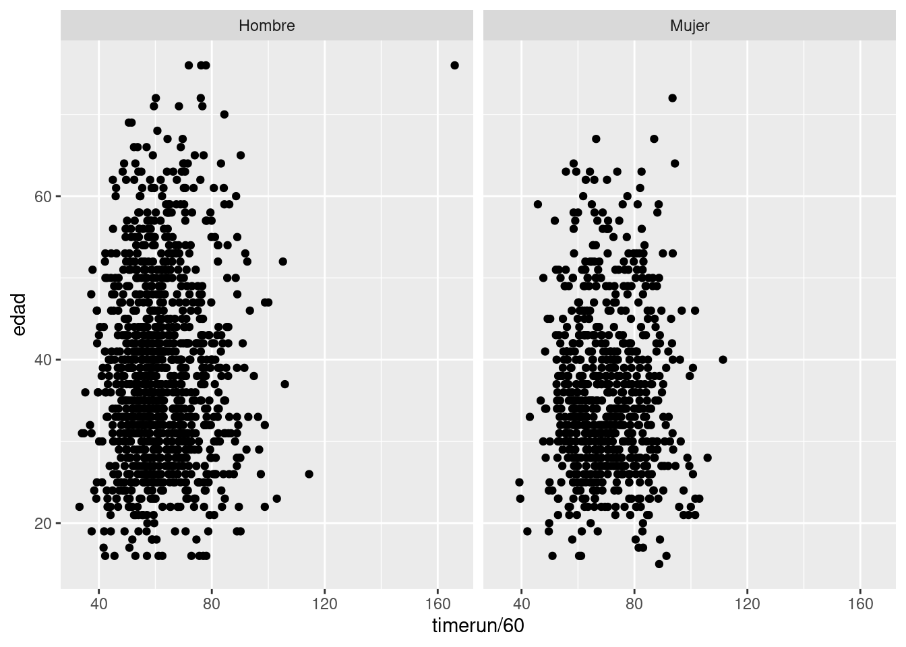
ggplot(CarreraLuz22, aes(y=edad , x=timerun/60))+
facet_wrap(~ categoria)+
stat_smooth(method = "loess" , formula =y ~ x)+
coord_cartesian(ylim = c(15, 80), xlim = c(35,180)) # ajuste de escalas ejes 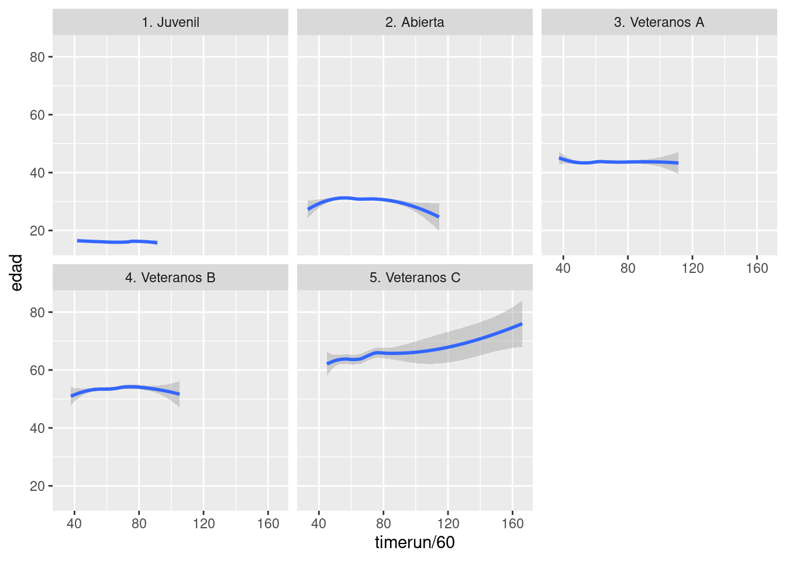
ggplot(CarreraLuz22, aes(y=edad , x=timerun/60))+
facet_wrap(~ categoria)+
stat_smooth(method = "loess" , formula =y ~ x)+
coord_cartesian(ylim = c(15, 80), xlim = c(35,180))+
labs(title = "Tiempos Carrera La Luz 2022", y= "Edad", x= "Tiempo (min)") # titulo y etiquetas 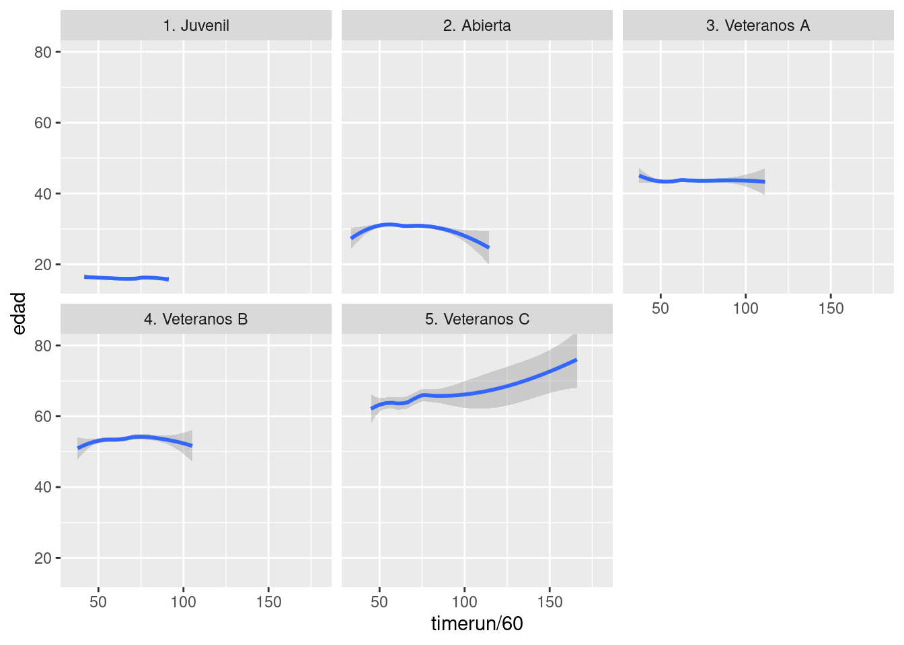
Otros gráficos con ggplot2
# Selección del grupo - Hombres categoría Abierta
data("CarreraLuz22")
CarreraLuz22M = subset(CarreraLuz22, CarreraLuz22$sex=="Hombre")
CarreraLuz22_c2M = subset(CarreraLuz22M, CarreraLuz22M$categoria=="2. Abierta")
# Definición tamaño de letras
Theme1 = theme(axis.title.x = element_text(size = 16),
axis.text.x = element_text(size = 10),
axis.title.y = element_text(size = 16),
# axis.text.y = element_blank(),
axis.text = element_text( size = 10),
legend.title = element_text(size = 10),
legend.text = element_text(size = 10),
strip.text = element_text(size=10),
title =element_text(size=10, face='bold') )# tamaño letra por grupos
# Cálculo de los cuartiles
cuartiles1=data.frame(prob=c(0.25,0.5,0.75),
valor=quantile(CarreraLuz22_c2M$timerun, c(0.25,0.5,0.75),na.rm = TRUE)/60 )
q=cuartiles1$valor
# Construcción de la gráfica
p4=ggplot(CarreraLuz22_c2M, aes(x=timerun/60, y=" ")) +
geom_jitter(color="#034A94", size=2, alpha=0.9)+
scale_color_manual(values="#034A94") +
geom_point(data=cuartiles1, aes(x=valor), color="#FF7F00",size=3)+
geom_boxplot(alpha = 0.4)+
labs(title = " ", y= "", x= "tiempo (min)")+
geom_text(size=6,data = NULL, x = q[1], y = 0.5, label = "Q1",col="#FF7F00")+
geom_text(size=6,data = NULL, x = q[2], y = 0.5, label = "Q2",col="#FF7F00") +
geom_text(size=6,data = NULL, x = q[3], y = 0.5, label = "Q3",col="#FF7F00") +
geom_text(size=6,data = NULL, x = 96, y = 0.5, label = "atípicos",col="#FF7F00") +
Theme1
p4 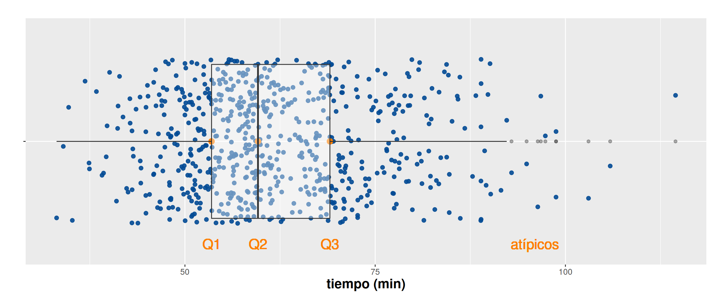